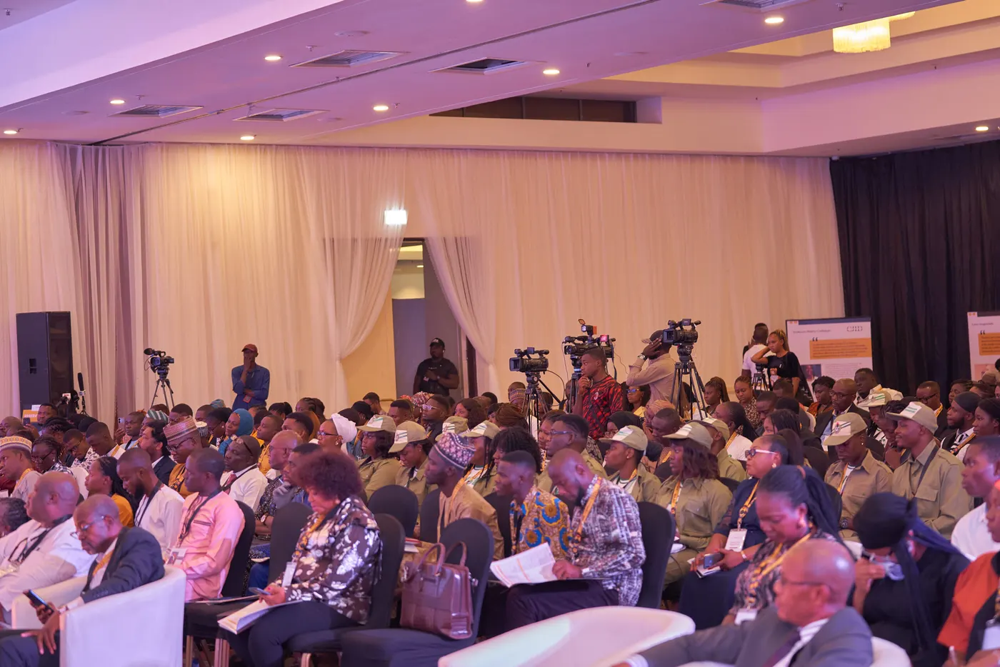
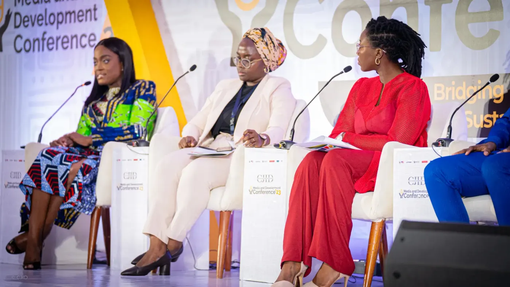
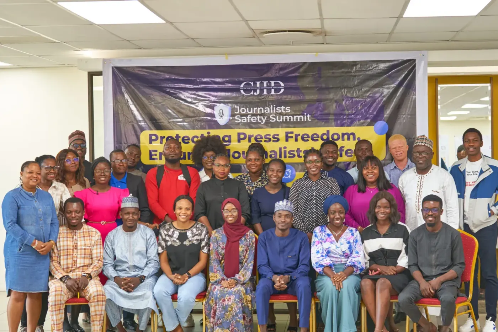

Dubawa
Foremost indigenous fact-checking, verification and media literacy platform to combat disinformation, misinformation and other forms of information disorder.
Media Innovation
Foremost indigenous fact-checking, verification and media literacy platform to combat disinformation, misinformation and other forms of information disorder.
We collect, analyse, and disseminate information in support of intelligence gathering for sound decision-making processes, and for political and economic risk management.

We leverage our capabilities and resources in sustaining and building reliable democracies across Africa
A premiere social accountability project to track Zonal Intervention Projects and constituency projects across the region.
AI-powered audio platform for analysing audio files, particularly in regards to monitoring radio shows in Africa.
The Press Attack Tracker is a platform to track and report attacks on the Press in Nigeria.
We build democratic accountability and strengthen journalism in Africa through sustainable media franchises and high-impact programmes.
We leverage our capabilities and resources in sustaining and building reliable democracies across Africa
We curate programmes and initiatives that set the agenda for democracy by going directly to the nooks and cranny of where the people reside to interact and report on the true needs and want of the people.

